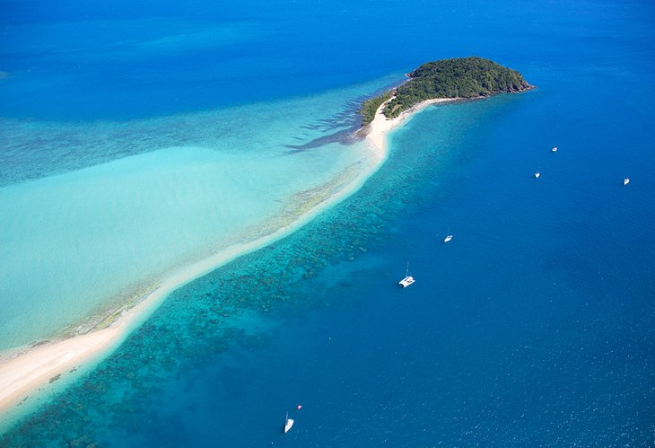

Tourism in Australia is an important part of the Australian economy, and comprises domestic and international visitors. Australia is the fortieth most visited country in the world according to the World Tourism Organization.In the financial year 2018/19, tourism was Australia's fourth-largest export and over the previous decade was growing faster than national GDP growth.At the time it represented 3.1% of Australia's GDP contributing A$60.8 billion to the national economy. In the calendar year up to December 2019, there were 8.7 million international visitors in Australia. Tourism employed 666,000 people in Australia in 2018–19, 1 in 21 jobs across the workforce.About 48% of people employed in tourism were full-time and 54% female Tourism also contributed 8.2% of Australia's total export earnings in 2018–19. Popular Australian destinations include the coastal cities of Sydney, Brisbane and Melbourne, as well as other high-profile destinations including regional Queensland, the Gold Coast and the Great Barrier Reef, the world's largest reef. Other popular locations include Uluru, the Australian outback and the Tasmanian wilderness. The unique Australian wildlife is also another significant point of interest in the country's tourism.